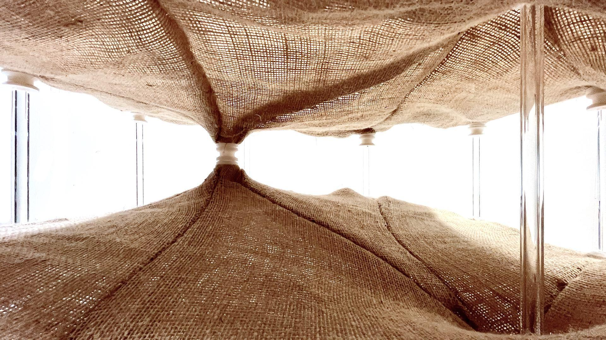
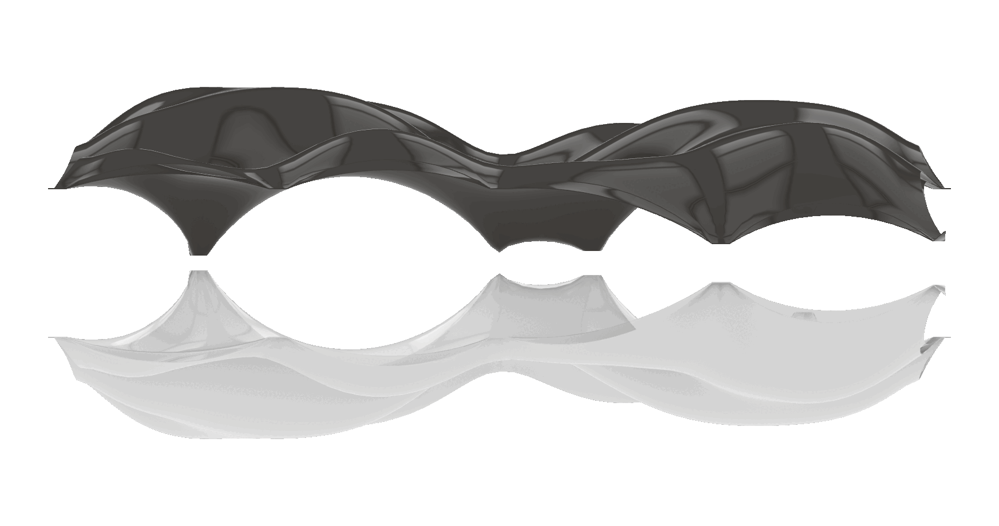
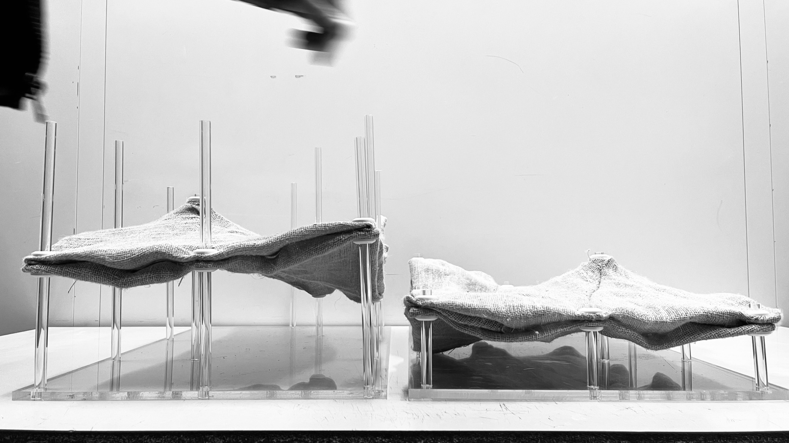
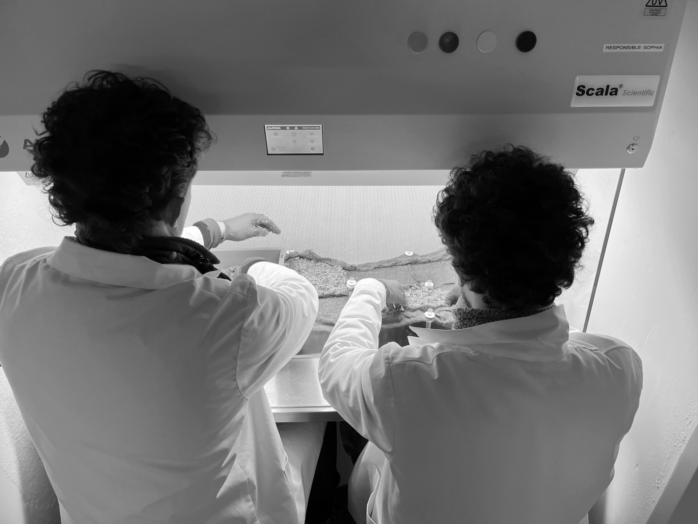

Zwischendecke – The space in between
Context
Zwischendecke explores how tensioned membranes, supported by irregular structures, can transform our perception of space. Drawing inspiration from historic ribbed vaults—like those found in the Sint-Niklaaskerk church in Belgium—and from gravity-formed membranes such as the Mannheim Chain Model by Frei Otto, this project investigates the idea of designing a building as a continuously vaulted space. The architectural space results from clear compositional actions such as flipping and mirroring, allowing viewers to experience both the original and its inverted reflection simultaneously.
Historic ribbed vaults often rely on a dialogue between structural ribs (which define the vault’s shape) and the ornamental skin (which articulates its surface). Zwischendecke adopts a similar interplay: by adjusting the membrane’s seams, its shape can be redefined, while gravity naturally forms the fabric spanning these seams.
Design criteria
A uniform grid outlines our design space. The grid points represent the columns from which the membrane is suspended, and the grid lines represent the membrane’s seams. By mirroring the membrane horizontally, we begin to explore the space in between (Figure 4).
The position of the central columns in the grid and the height at which the membranes attach to these columns are the main design parameters. To work with these constraints, we simulated a textile membrane hanging under gravity (Figure 1), which allowed us to experiment with different spatial configurations. Conceptually, this approach enabled us to engage with and explore captivating spaces.
But how are these spaces articulated in physical form? The two main challenges were how the mirrored membrane would function structurally and how to cultivate the membranes with mycelium. To translate our design into a physical model, we added thickness to the membrane.
We used two layers of hemp fabric for the membrane, enabling us to control its thickness. These two layers sandwich the mycelium substrate and create a homogeneous surface on both the top and bottom sides of the membrane. Additionally, this thickness allows the mycelium to spread and solidify, giving the membrane enough structural stiffness to grow while hanging. Once the mycelium has locked the membrane in place, we can invert it.
Living mockup
We are interested in how the mycelium grows when sandwiched between these curvilinear membranes and in testing our hypothesis that the membranes’ shape can be locked in place. Additionally, we are interested in the spaces we create and how the cultivated surfaces contrast with the smooth spaces we simulated.
The digital model serves as the initial reference for our mockup. Structural nodes produced through 3D printing attach the textile to the columns, which are positioned on a base plate for accurate alignment with the digital plan. Both the base plate and the columns are made of transparent acrylic glass, drawing attention to the growing membranes. An initial prototype validated the seam placement and attachment points, and its membrane components were reused as a template for the final model.
During the growing process, two mirrored membrane pairs grow side by side (Figure 2). Once a mirrored membrane is fully cultivated, it can be flipped and placed atop the original membrane (Figure 3).
Conclusion
One way to enhance this system is by refining the structural analysis and expanding the range of materials tested, ensuring better load-bearing capacity and long-term durability. Additionally, fine-tuning the attachment points and seams through iterative prototyping could improve the overall form and ease of construction. As for integrating this method into building design, tensioned membranes with mycelium offer a flexible approach to shaping architectural space. Their capacity to form lightweight, adaptable structures could open new possibilities for creating vaulted areas that can adapt to different functional or aesthetic needs while embracing organic growth processes.



